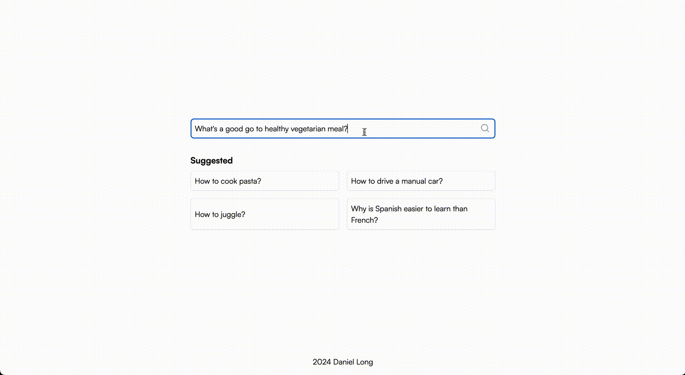

Ask LLMs was a small project I started to explore a forum style interface for asking questions to a large language model. The thinking was that often when trying to find the answer to a specific question I find forums the most useful. This is because I can skim read the answers and quickly find the one which answers the aspect of the question which I am most interested in. The typical LLM interface is a single multi-paragraph answer, meaning that the question needs to be well composed to get the answer you are looking for. This project is a minimal implementation of this interface. It can be run locally following the instructions in the repository. If anyone has any thoughts on how to improve this project I would love to hear them, also feel free to fork it and develop the idea further!
